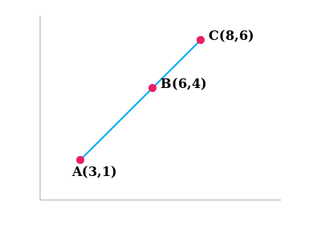
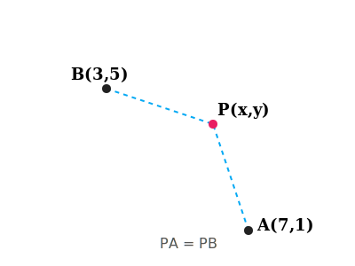
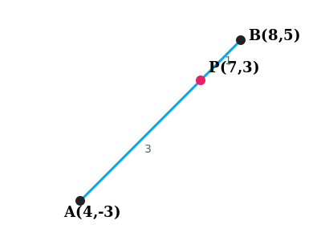
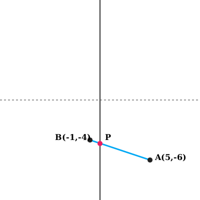

Example 1. Do the points (3, 2), (-2, -3) and (2, 3) form a triangle? If so, name the type
of triangle formed.

Let \(P(3, 2)\), \(Q(-2, -3)\) and \(R(2, 3)\).
\(PQ = \sqrt{(-2-3)^2 + (-3-2)^2} = \sqrt{(-5)^2 + (-5)^2} = \sqrt{50} \approx 7.07\)
\(QR = \sqrt{(2-(-2))^2 + (3-(-3))^2} = \sqrt{4^2 + 6^2} = \sqrt{16+36} = \sqrt{52} \approx
7.21\)
\(PR = \sqrt{(2-3)^2 + (3-2)^2} = \sqrt{(-1)^2 + 1^2} = \sqrt{2} \approx 1.41\)
Since sums of any two sides > third, they form a triangle.
Also \(PQ^2 + PR^2 = 50 + 2 = 52 = QR^2\).
Yes, they form a Right-Angled Triangle.
Example 2. Show that the points (1, 7), (4, 2), (-1, -1) and (-4, 4) form a square.

Let \(A(1, 7), B(4, 2), C(-1, -1), D(-4, 4)\).
\(AB = \sqrt{(4-1)^2 + (2-7)^2} = \sqrt{9+25} = \sqrt{34}\)
\(BC = \sqrt{(-1-4)^2 + (-1-2)^2} = \sqrt{25+9} = \sqrt{34}\)
\(CD = \sqrt{(-4-(-1))^2 + (4-(-1))^2} = \sqrt{9+25} = \sqrt{34}\)
\(DA = \sqrt{(1-(-4))^2 + (7-4)^2} = \sqrt{25+9} = \sqrt{34}\)
Diagonals: \(AC = \sqrt{(-1-1)^2 + (-1-7)^2} = \sqrt{4+64} = \sqrt{68}\)
\(BD = \sqrt{(-4-4)^2 + (4-2)^2} = \sqrt{64+4} = \sqrt{68}\)
Since sides are equal and diagonals are equal, it forms a square.
Example 3. Fig. 7.6 shows the arrangement of desks in a classroom. Ashima, Bharti and
Camella are seated at A(3, 1), B(6, 4) and C(8, 6) respectively. Do you think they are seated in a line?
Give reasons for your answer.

Using Distance Formula:
\(AB = \sqrt{(6-3)^2 + (4-1)^2} = \sqrt{3^2 + 3^2} = \sqrt{9+9} = \sqrt{18} = 3\sqrt{2}\)
\(BC = \sqrt{(8-6)^2 + (6-4)^2} = \sqrt{2^2 + 2^2} = \sqrt{4+4} = \sqrt{8} = 2\sqrt{2}\)
\(AC = \sqrt{(8-3)^2 + (6-1)^2} = \sqrt{5^2 + 5^2} = \sqrt{25+25} = \sqrt{50} = 5\sqrt{2}\)
Since \(AB + BC = 3\sqrt{2} + 2\sqrt{2} = 5\sqrt{2} = AC\), the points A, B and C are
collinear.
Yes, they are seated in a line.
Example 4. Find a relation between x and y such that the point (x, y) is equidistant from
the
points (7, 1) and (3, 5).

Let \(P(x, y)\) be equidistant from \(A(7, 1)\) and \(B(3, 5)\).
We are given \(AP = BP\), so \(AP^2 = BP^2\).
\((x - 7)^2 + (y - 1)^2 = (x - 3)^2 + (y - 5)^2\)
\(x^2 - 14x + 49 + y^2 - 2y + 1 = x^2 - 6x + 9 + y^2 - 10y + 25\)
\(x^2 - 14x + y^2 - 2y + 50 = x^2 - 6x + y^2 - 10y + 34\)
\(-14x + 6x - 2y + 10y + 50 - 34 = 0\)
\(-8x + 8y + 16 = 0\)
Dividing by -8: \(x - y - 2 = 0\) or \(x - y = 2\).
Relation is \(x - y = 2\).
Example 5. Find a point on the y-axis which is equidistant from the points A(6, 5) and
B(-4,
3).

We know that a point on the y-axis is of the form \((0, y)\).
Let the point \(P(0, y)\) be equidistant from \(A(6, 5)\) and \(B(-4, 3)\).
\(PA^2 = PB^2\)
\((0 - 6)^2 + (y - 5)^2 = (0 - (-4))^2 + (y - 3)^2\)
\(36 + y^2 - 10y + 25 = 16 + y^2 - 6y + 9\)
\(61 - 10y = 25 - 6y\)
\(-10y + 6y = 25 - 61\)
\(-4y = -36 \Rightarrow y = 9\)
The required point is (0, 9).
Example 6. Find the coordinates of the point which divides the line segment joining the
points
(4, -3) and (8, 5) in the ratio 3 : 1 internally.

Let \(P(x, y)\) divide AB in 3:1.
\(x = \frac{3(8) + 1(4)}{3+1} = \frac{24+4}{4} = \frac{28}{4} = 7\)
\(y = \frac{3(5) + 1(-3)}{3+1} = \frac{15-3}{4} = \frac{12}{4} = 3\)
Point P is (7, 3).
Example 7. In what ratio does the point (-4, 6) divide the line segment joining the points
A(-6, 10) and B(3, -8)?

Let the ratio be \(m_1 : m_2\). Using Section Formula for x-coordinate:
\(-4 = \frac{m_1(3) + m_2(-6)}{m_1 + m_2}\)
\(-4(m_1 + m_2) = 3m_1 - 6m_2\)
\(-4m_1 - 4m_2 = 3m_1 - 6m_2\)
\(2m_2 = 7m_1 \Rightarrow \frac{m_1}{m_2} = \frac{2}{7}\)
Verification for y-coordinate: \(\frac{2(-8) + 7(10)}{2+7} = \frac{-16 + 70}{9} = \frac{54}{9}
=
6\). (Matches).
Ratio is 2:7.
Example 8. Find the coordinates of the points of trisection (i.e., points dividing in
three
equal parts) of the line segment joining the points A(2, -2) and B(-7, 4).
Let P and Q be the points of trisection of AB.
Case 1: P divides AB in ratio 1:2.
\(P = \left( \frac{1(-7) + 2(2)}{1+2}, \frac{1(4) + 2(-2)}{1+2} \right)\)
\(P = \left( \frac{-7+4}{3}, \frac{4-4}{3} \right) = \left( \frac{-3}{3}, 0 \right) = (-1,
0)\)
Case 2: Q divides AB in ratio 2:1.
\(Q = \left( \frac{2(-7) + 1(2)}{2+1}, \frac{2(4) + 1(-2)}{2+1} \right)\)
\(Q = \left( \frac{-14+2}{3}, \frac{8-2}{3} \right) = \left( \frac{-12}{3}, \frac{6}{3}
\right) =
(-4, 2)\)
Points are (-1, 0) and (-4, 2).
Example 9. Find the ratio in which the y-axis divides the line segment joining the points
(5,
-6) and (-1, -4). Also find the point of intersection.

Let the ratio be \(k : 1\). The point on y-axis is \((0, y)\).
x-coordinate = \(0\).
\(\frac{k(-1) + 1(5)}{k+1} = 0\)
\(-k + 5 = 0 \Rightarrow k = 5\). So ratio is 5:1.
Now finding y-coordinate:
\(y = \frac{5(-4) + 1(-6)}{5+1} = \frac{-20 - 6}{6} = \frac{-26}{6} = \frac{-13}{3}\)
Ratio is 5:1 and Point is (0, -13/3).
Example 10. If the points A(6, 1), B(8, 2), C(9, 4) and D(p, 3) are the vertices of a
parallelogram, taken in order, find the value of p.

Diagonals of a parallelogram bisect each other. So midpoint of AC = midpoint of BD.
Midpoint of AC = \(\left( \frac{6+9}{2}, \frac{1+4}{2} \right) = (7.5, 2.5)\)
Midpoint of BD = \(\left( \frac{8+p}{2}, \frac{2+3}{2} \right) = \left( \frac{8+p}{2}, 2.5
\right)\)
Equating x-coordinates:
\(\frac{8+p}{2} = 7.5 \Rightarrow 8+p = 15 \Rightarrow p = 7\).
Value of p is 7.